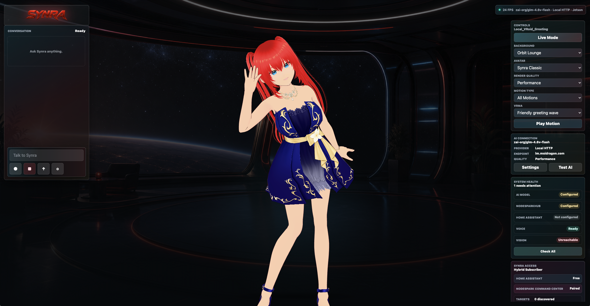

Help Build Synra
Synra needs thoughtful contributors who care about beautiful UI, reliable Jetson performance, safe local automation, avatar motion, voice timing, documentation, and privacy-first assistant behavior.

Good Places To Help
Profile kiosk FPS, render scale, startup health, WebGL behavior, and Electron station reliability.
Improve Synra's expressions, motion routing, lip-sync timing, visual polish, and VRMA QA notes.
Help with Home Assistant discovery, safe confirmations, NodeSparkHub pairing, and status reporting.
Refine settings, kiosk controls, mobile layouts, screenshots, and accessibility without hiding state.
Clarify install paths, troubleshooting steps, release notes, diagnostics, and privacy expectations.
Add focused checks for bugs, deployment scripts, station behavior, voice output, and model routes.
Contributor Quick Start
Fork the repo, make a focused branch, keep secrets out of commits, and run the same checks that CI runs.
npm install
npm run typecheck
npm run build
npm run perf:smoke
python3 -m py_compile scripts/synra_server.pySafety And Privacy
Do not post API keys, Home Assistant tokens, ElevenLabs keys, NodeSpark tokens, private logs, raw camera frames, raw audio, or face samples. Security and privacy issues should be reported privately through the maintainer channel listed in the repository security policy.